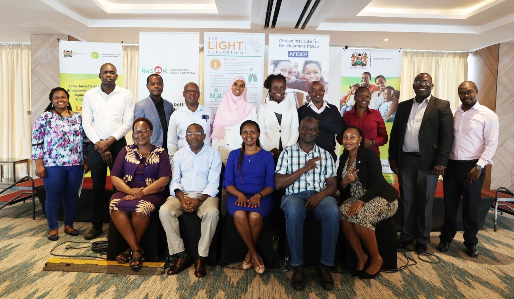
RESEARCH / FROM THE FIELD
Strengthening the voice of TB research in Kenya.
Inside the LIGHT scientific writing workshop.
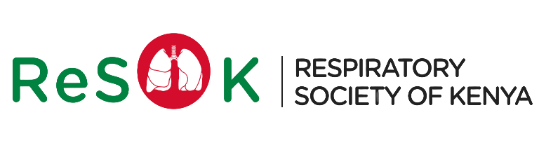
Join our community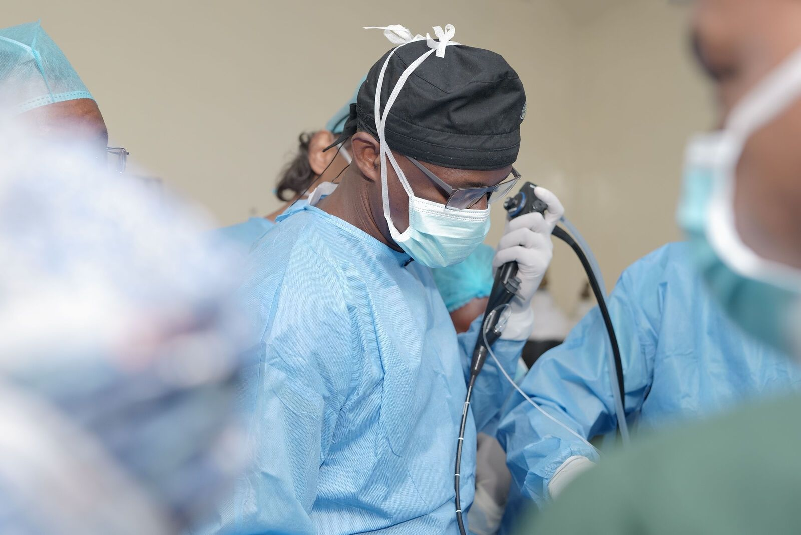
SCIENCE. COMMUNITY. LUNG HEALTH.
Bringing Kenya’s respiratory community together. Advancing the knowledge, practice and care that every breath deserves.
Discover ReSoKHealthy lungs for all people in Kenya and beyond.
We are the Respiratory Society of Kenya. A professional home for clinicians, researchers and partners working together through education, research, prevention and advocacy.
Get to know ReSoK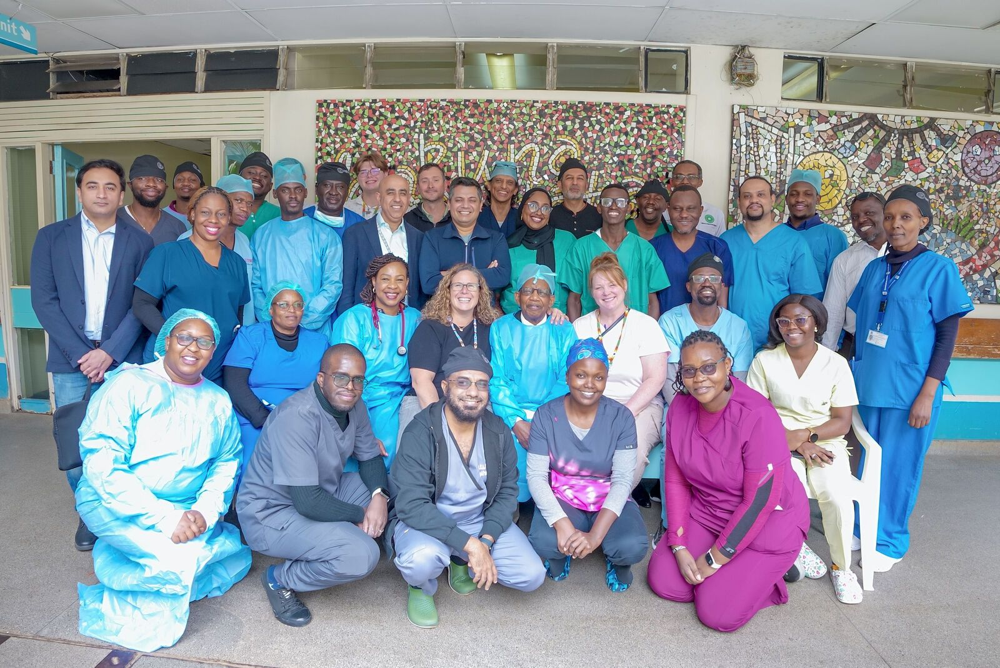
Pumzi.Swahili for breath.
The values that bring us together.
From the first hands-on procedure to the next scientific conversation. Learning that connects respiratory knowledge to clinical practice.
Explore learning at ReSoK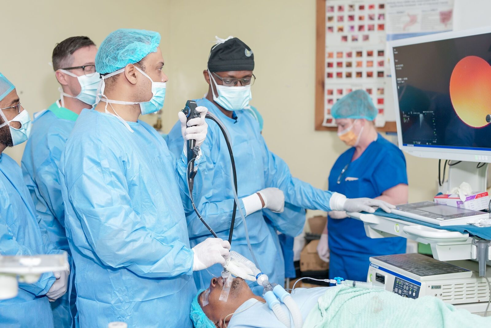
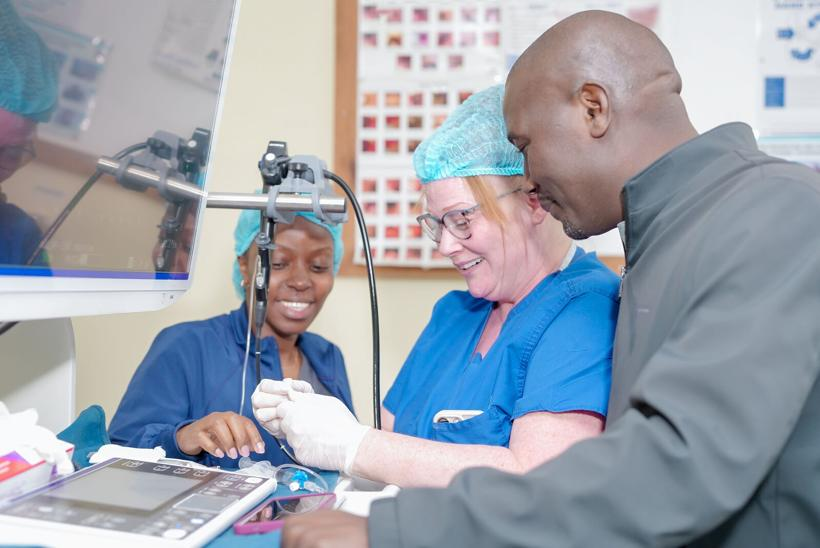
FROM KNOWLEDGE TO PRACTICE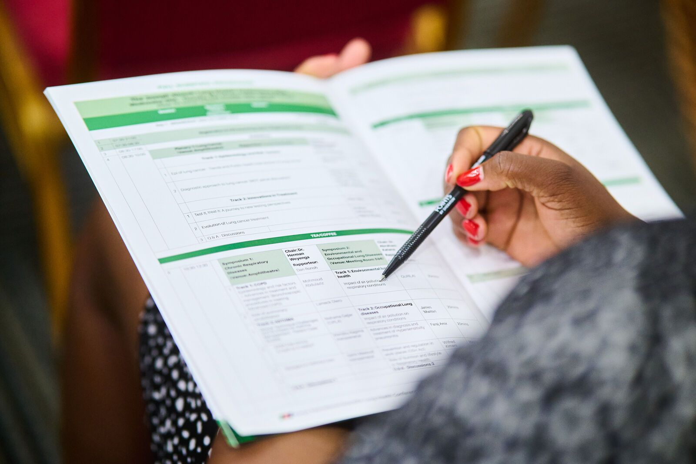
Lung health moves forward when the evidence reflects the people it serves.
Explore ReSoK’s research collaborations and the knowledge informing respiratory care in Kenya.
Understanding pathways to TB care
Integrated tuberculosis & respiratory care
Interstitial lung disease research in Kenya
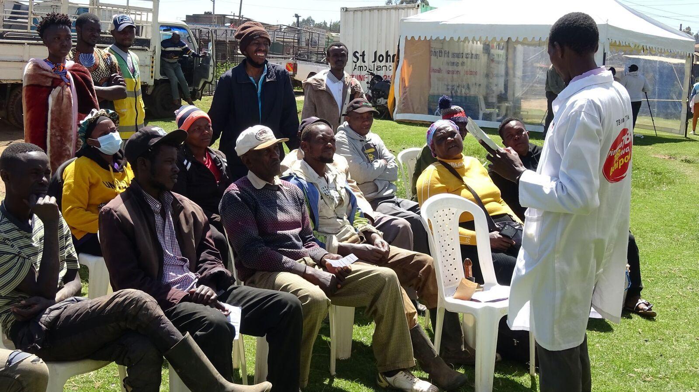
From community screening to respiratory health awareness. Connecting clinical expertise with the everyday lives of the people we serve.
Lung health resources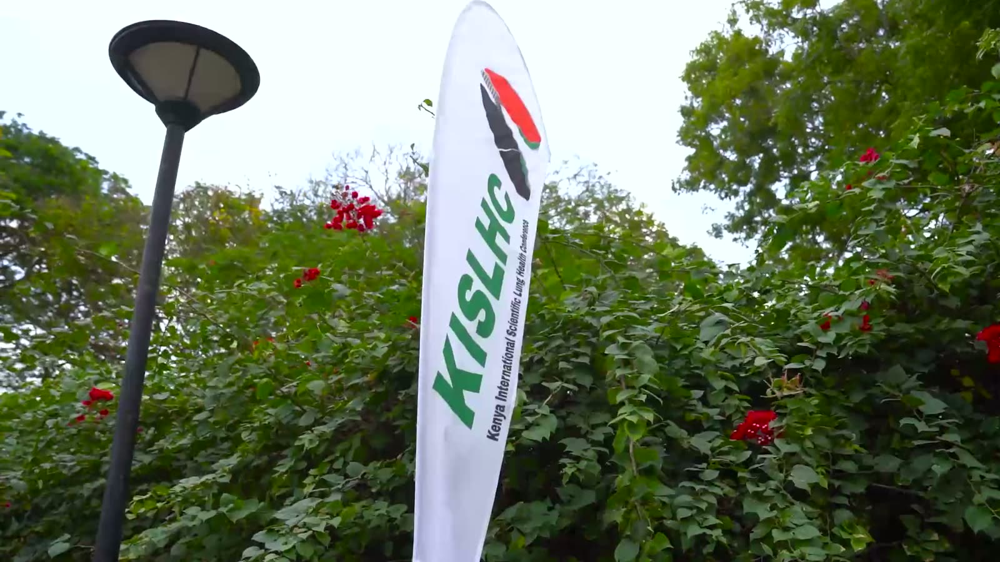
THE LEARNING DIARY
29SEP / 2025TB & Lung Health Symposium29–30 September · The Nairobi HospitalA continuing conversation across disciplines, institutions and counties.
Connect with people who share your commitment to respiratory health. Learn, exchange ideas and be part of what comes next.
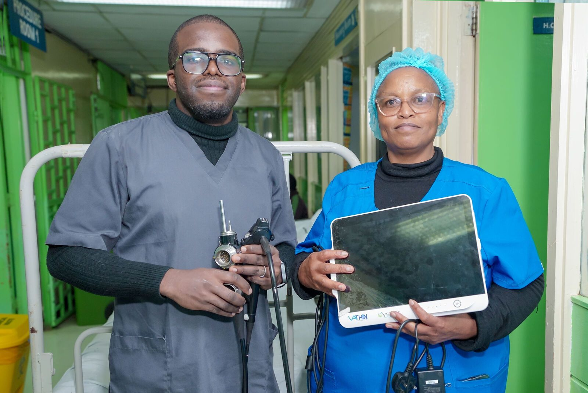

RESEARCH / FROM THE FIELD
Inside the LIGHT scientific writing workshop.
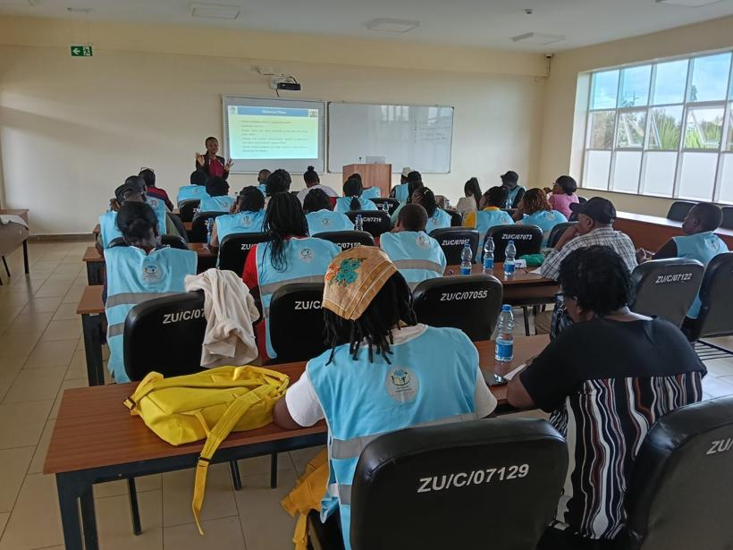
COMMUNITY / KIAMBU
Training community health promoters.
GUIDELINES / RESOURCES
Explore respiratory guidelines and practical resources.
Open the collectionTHE RESPIRATORY SOCIETY OF KENYA
Healthy lungs for all people
in Kenya and beyond.